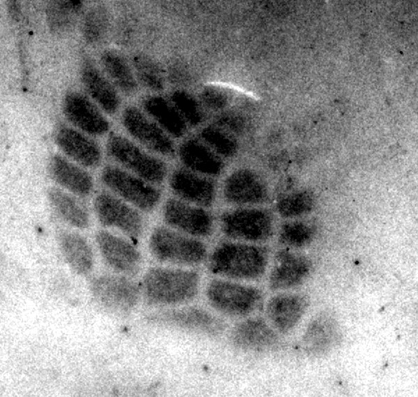
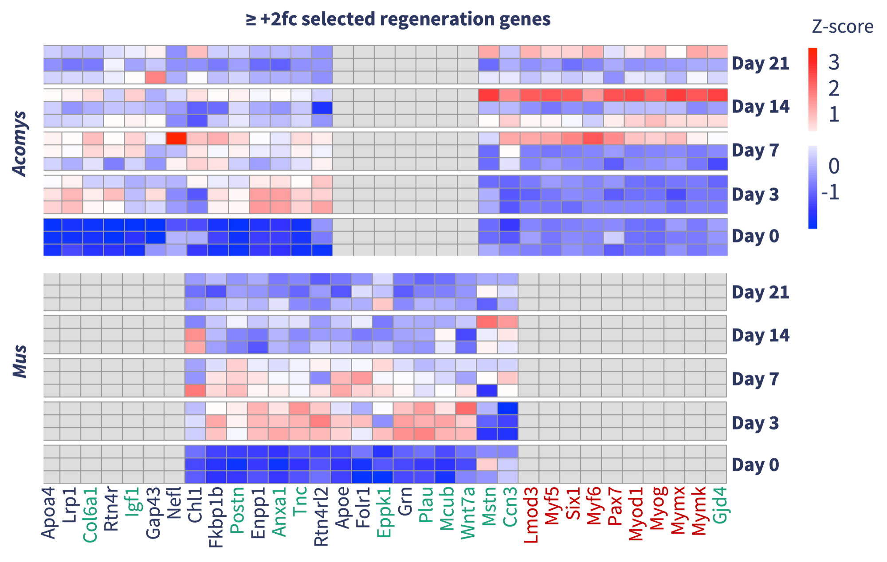

Why do some vertebrates regenerate while mammals scar?
Study naturally regenerative animals.
Most vertebrates, humans included, answer injury with scar. Scar closes the wound quickly, but it is not the tissue that was lost: it does not grow hair, it does not house sensory end-organs, and it is poorly innervated. A handful of species do something else entirely. Spiny mice (Acomys) regrow skin, whisker follicles, muscle, and nerves after wounding. Salamanders rebuild entire limbs.
We work with those animals because a mechanism is only visible against a contrast. Comparing species that succeed with closely related species that fail turns an untestable question about human healing into a tractable one about biology. Everything below follows from that choice.

We follow regeneration across every level of biological organization.
Regeneration is not a single event that can be measured at one scale. A gene program is meaningless if the tissue never works; a behavioral recovery is uninterpretable without knowing what the cells did. So we work the whole chain, from the transcript to the patient.

Genes
The transcriptional programs that separate regeneration from scarring.
Cells
The Schwann cells, fibroblasts, and immune cells that carry those programs out.
Tissues
Whether regrown skin, follicles, and nerves rebuild the original architecture or only approximate it.
Neural circuits
Whether the brain reconnects to the rebuilt tissue and reads it correctly.
Behavior
Whether sensation and movement actually return — the only outcome that matters to the animal.
Translation
What regenerative species have that common laboratory mammals and humans lack.
Human regenerative medicine
Nerve repair, transplantation, and rehabilitation strategies informed by what works in nature.

Functional Regeneration
Restoring sensation, movement, and neural circuitry after injury.
Organs and tissue depend on the nervous system to function. After injury, disease, or transplant, nerves must regrow into the organ or tissue, reconnect with the brain, and restore the behaviors that depend on them. This is functional reinnervation, and it fails in most animals, including humans. We study highly regenerative animals that achieve it to understand why they succeed and what that means for human patients.
The difficulty is that after injury, regeneration and adaptation occur simultaneously. Tissue regrows while the nervous system rewires, sensation redistributes, and behavior changes to compensate. Both processes can restore function, and they are not distinguishable by outcome alone. An animal that scores well on a behavioral assay may have fully reinnervated its target organs, or it may have learned to compensate without them. These are not the same biological achievement, and they do not have the same implications for human therapy.
Functional reinnervation is the specific standard we apply. We ask whether nerves regrew into the right targets, whether those targets reconnected with the brain, and whether the behavior that depends on that circuit actually returned. When all three align, we can call it restoration. When they dissociate, we learn what compensation looks like and why it falls short.
Memory and Cognition in Spiny Mice
Recovery means returning to a baseline, and you cannot measure restoration without first knowing what you are restoring. Spiny mice show enhanced learning and memory relative to standard laboratory mice. We are characterizing this cognitive baseline in uninjured animals before studying how injury and reinnervation affect it. If the brain reintegrates new sensory signals after peripheral nerve regeneration, memory and learning are where that reintegration becomes measurable. This work is supported by an internal PrePI grant from Kennesaw State University, with Dr. Vishnu Suppiramaniam and Dr. Erica Holliday.
Olfactory and Tactile Sensation in Salamanders
Before we can ask whether a salamander recovers its sensory abilities after injury, we need to know what those abilities are. We are characterizing olfactory and tactile sensation across salamander species as a baseline for future studies of functional reinnervation. Species that differ in how they use their bodies during recovery may differ in reinnervation outcomes, and those differences start with the animal's normal sensory world. This work is supported by an internal Mentor Protege grant from Kennesaw State University, with Dr. Todd Pierson.
Does Structure Predict Function?
Regenerated tissue is not always equivalent to the original, so we quantify structural recovery at the level of individual nerves, end-organs, and skin architecture. Then we test whether that structure predicts behavior. Using behavioral assays alongside histological and electrophysiological measures, we ask whether the degree of structural reinnervation predicts the degree of functional recovery, or whether the two dissociate. Dissociation tells us compensation is doing the work. Alignment tells us reinnervation succeeded. Variability in these outcomes is not noise, it is the signal.
The Whisker Pad as a Model for Functional Reinnervation
The spiny mouse whisker pad is a model system for studying how functional reinnervation happens at the organ level. Each whisker follicle is a discrete sensory end-organ with defined innervation targets, making it possible to ask precisely whether regenerating nerves find the right targets and restore the right signals. We use this system to identify the molecular, cellular, and behavioral conditions that support high-quality reinnervation, and to ask what common mammals lack.
Behavioral–Sensory Feedback as a Driver of Reinnervation
Reinnervation does not happen without the brain and behavior. We hypothesize that active sensory feedback and behavioral engagement during recovery are not passive consequences of reinnervation but necessary drivers of it. Salamanders that use their limbs during recovery reinnervate differently than those that do not. Spiny mice that actively explore reinnervate differently than those that are sedentary. Identifying the critical windows when behavioral input most influences nerve guidance and target reinnervation is how we design rehabilitation strategies that work alongside molecular and surgical therapies, not after them.
Key Publications
- Varholick et al. (2025). "Spiny mice regenerate wounded whisker pad skin with whisker follicles, muscles, and targeted innervation." npj Regenerative Medicine. Details
- Varholick (2025). "Integrating regenerative biology with developmental psychobiology to understand behavioral recovery." Developmental Dynamics. Details
- Varholick et al. (2024). "Older 6-9-month-old spiny mice have delayed and spatially heterogeneous ear wound regeneration." Biology Open. Details

Molecular Programs of Regeneration
Identifying conserved regenerative mechanisms across tissues and species.
Functional recovery is the outcome. Gene and cell programs are the cause. If the first theme asks whether the animal got its sensation and movement back, this one asks what the tissue actually did to make that possible, and why the same injury in a laboratory mouse produces scar instead.
A mechanism found in one tissue of one species is a curiosity. A mechanism that recurs across skin, ear, and nerve, and across spiny mice, salamanders, and laboratory mice, is a candidate for therapy. Conservation is our filter for what is worth pursuing toward the clinic.
Decoding Regeneration and Scarring with Genomics and AI
We are using transcriptomics, bioinformatics, and AI-assisted analysis to reveal the genes and cell populations that drive tissue regeneration in spiny mice, and to identify where the scarring response diverges from the regenerative one. The goal is not a gene list but a decision point: the moment after injury when a tissue commits to rebuilding or to repairing, and the signals that push it one way or the other.
Conserved Mechanisms Across Tissues and Species
Spiny mice regenerate ear, skin, and whisker pad. Salamanders regenerate limbs. Laboratory mice regenerate almost nothing. Comparing these systems against each other, rather than studying any one in isolation, is what separates a mechanism specific to a tissue from a mechanism fundamental to regeneration. We build and maintain open resources for this comparison, including the Acomys Literature Library, Antibody Database, and Spiny Mouse Brain Atlas.
Key Publications
Manuscripts in preparation.

Closing the gap in human organ repair.
Every transplanted organ or tissue arrives denervated. The surgery reconnects blood supply, but the nervous system does not follow. A transplanted heart beats without autonomic regulation. A transplanted kidney filters without the sensory feedback that normally calibrates it. Even in injuries short of transplant, when nerves are severed and regrow, they rarely find their original targets with enough precision to restore full function. Patients live with permanent numbness, dysregulation, and incomplete recovery not because the organ failed but because the nervous system never fully reconnected.
This is the gap we are working to close, and it is why both themes exist. By studying species that achieve functional reinnervation — where nerves regrow into the right targets, the brain reintegrates the new signals, and behavior returns — we aim to identify what drives successful reconnection and what blocks it in humans.